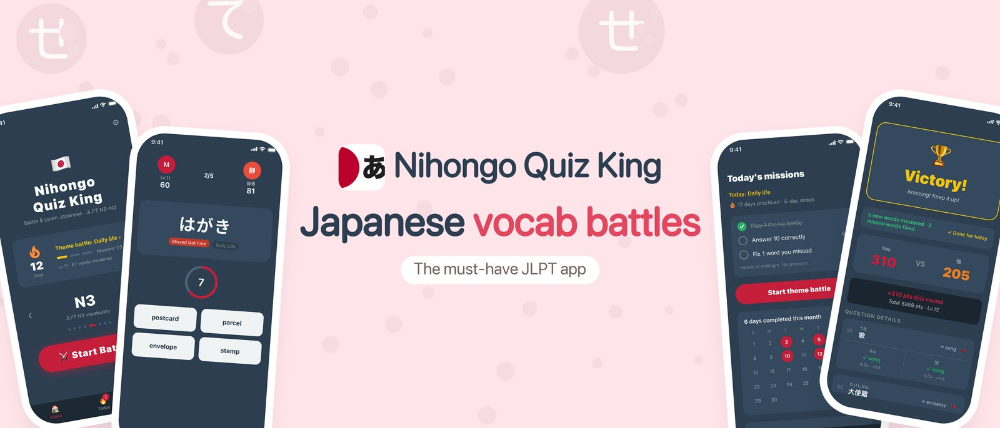

Nihongo Quiz King日文知識王
Nihongo Quiz King is a 1v1 quiz game for learning Japanese vocabulary, built with Expo/React Native and shipped to the App Store. This is an ongoing project — each article below documents a phase of its evolution.日文知識王是一款 1v1 日文單字對戰遊戲，使用 Expo/React Native 開發並上架 App Store。這是一個持續進行的專案——以下每篇文章記錄一個演進階段。
From Zero to an App People Use: Five Decisions從零到有人在用的 App：五個決定
Hiding the kanji, a rival without a server, simple designs and the assumptions behind them, App Store review, and giving the AI a memory把漢字藏起來、不需要伺服器的對手、簡單設計背後的假設、App Store 審查，以及給 AI 一份記憶
Test the Reviewer Before You Trust It先測試評審，再信任它
The first AI reviewer caught half the known problems. How I built a five-layer evaluation system for 640 AI-written questions, and what still got through.第一版 AI 評審只抓到一半的已知問題。我怎麼替 640 道 AI 產出的題目建立五層評測，以及還是漏掉了什麼。
Scale Needs a Process First要規模化，先有流程
Adding kana mode and a 314-word N5 level: an evening of checking became a few minutes, and organic downloads doubled加入假名模式和 314 字的 N5：原本一個晚上的檢查變成幾分鐘，自然下載翻倍
It Wasn't the AI. It Was the Clock.問題不在 AI，在時間
New players kept losing. I made the AI easier; the data said they were answering too slowly. Plus the daily loop built for retention. Work in progress.新玩家一直輸，我讓 AI 變簡單；數據說問題是他們答得太慢。以及為了留存做的每日循環。持續更新中。
